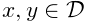
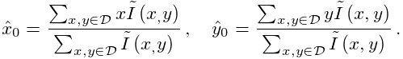
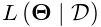
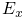
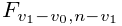
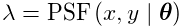
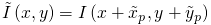
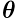
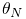
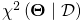

PSF model: Symmetric 2D Gaussian function
A common approximation of the real PSF is a symmetric two-dimensional Gaussian function given by the formula
|  |
where  gives the expected photon count at the integer pixel position  for a vector of parameters . The entries of the vector  are as follows:  and  are the sub-pixel molecular coordinates,  is the imaged size of the molecule,  corresponds to the total number of photons emitted by the molecule, and  corresponds to the background offset.
Generated on Sun Oct 4 04:17:55 2015 by LaTeXML ![[LOGO]]()